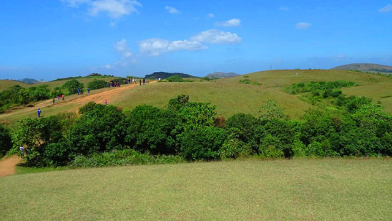

The City of letters
Kottayam is a city in the Indian state of Kerala.It is located in central Kerala and is also the administrative capital of Kottayam district.Bordered by the lofty and mighty Western Ghats on the east and the Vembanad Lake and paddy fields of Kuttanad on the west, Kottayam is a land of unique characteristics.
Top Destinations

Kottathavalam
A fascinating cave carved out of rock surface is Kottathavalam lying on the top of a Murugan Hills at Kurisumala. The cave is considered to be the resting place for Madura Royal family.

Nadukani
1. After all the blessings from temples, it is time for some adventure. Nadukani is one such place nestled amid the wilderness of nature and densely wooded hills offering its visitors a beautiful trail for trekking.
Thirunakkara Mahadev Temple
A popular Hindu shrine and great epitome of Kerala style of architecture, Thirunakkara Mahadev Temple is dedicated to Lord Shiva. The temple was established in 16th century by the king of Thekkumkur

Kumarakom Bird Sanctuary
A paradise for bird watchers, Kumarakom Bird Sanctuary or Vembanad Bird Sanctuary is situated on the banks of Lake Vembanad in kavanar River basin. The place is spread across a huge area of 14 acres providing a natural habitat to about 91 species of local birds and 50 species of migratory birds.

Island of Pathiramanal
A beautiful natural abode to various species of birds, Island of Pathiramanal is situated in Alappuzha District offering a paradise for ornithologists.

Illikkal Kallu
Located at a height of 6000 ft above the sea level in the Western Ghats of Kottayam, Kerala, Illikkal Kallu is a major tourist attraction and one of the most pristine spots in all of India. Situated in Moonnilavu Village, Meenachil taluk, the nearest city to the summit is Teekoy.

Marmala Waterfalls
Located at a distance of few kms from Erattupetta in Kottayam inside a private rubber estate, Marmala Waterfalls are popularly known as the ‘enchantress of the jungle’. Plummeting from a height of 200 feet, the unblemished clear waters create and aura of mist around them.
Poonjar Palace
A huge majestic palace bounded by a boundary of massive walls is Poonjar Palace situated in Meenachil Taluka. The palace is adorned with a fascinating collection of various type of furniture and antiques which includes grand chandeliers, jewelry boxes, statues, grain measurer, weapons and palm leaf engravings.

Vaikom
Alappuzha, Venice of the East. The district Kottayam, has a network of rivers,canals and backwaters. Manimala, Pampa and Achancovil are the major rivers.

Tomb of St.Alphonsa
Located at a distance of 5 kms east of Pala in Bharananganam, Kottayam, St. Mary’s Church holds the mortal remains of St. Alphonsa (1910- 1946). Born as Anna Muttathupadathu, St. Alphonsa was an Indian religious sister and educator.